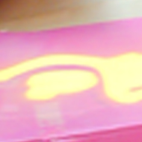
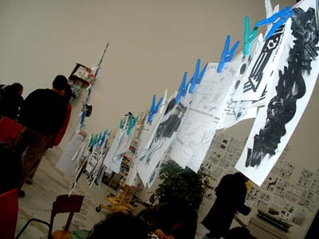
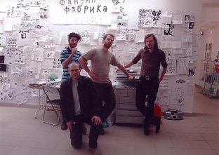

En
quoi ça consiste ?
La
fabrique Gomez de fanzines (mariée à Adam Gomez depuis septembre 2011) fabrique des fanzines
de A à Z. Alex Baladi, Ibn Al Rabin, Yves
Levasseur, Benjamin Novello, moi, et tous ceux qui veulent
bien participer, dessinent, écrivent, photocopient,
plient, agrafent, coupent et lisent des
fanzines. Il y a une photocopieuse, un massicot,
une agrafeuse, des stylos, du papier,une/des
tables, des chaises, un coin pour lire avec
un tapis, des coussins, de la musique. Les
originaux sont scotchés au mur, un exemplaire
de chaque pend à la corde à linge, des exemplaires
gratuits sont offerts dans un boîte.
Pour
nous inviter à ton festival il te faut un
local avec des tables et des chaises, et
surtout une photocopieuse. Contacte moi
à 
Villes
déjà visitées
- 2003
1 Suisse - Sierre, Cubix rooms (juin)
2 France - Toulouse, Myrys - Explosion du zine
- 2004
3 France - Angoulème, Underboom (janvier)
4 Bourg-lès-Valence mars
5 Poitiers, 20 ans du confort moderne (8 au 10 avril)
6 Moscou, KomMissia (avril-mai)
7 Toulouse, Myrys - Explosion du zine septembre
8 Bourges octobre
- 2005
9 Lucerne, festival Fumetto (avril)
10 Yverdon, Non-Festival (juin)
11 Lausanne, festival BD-Fil (septembre)
12 Geneve, bibliotheque de St-Jean septembre
13 France - St.Nazaire, VIP (décembre)
- 2006
14 Genève,La Galerie des Grottes (février)
15 Liège (13-14 mai)
16 Bruxelles, 3e Quinzaine de la BD (mai) 6
17 Yverdon, Non-Festival (juin)
18 Genève, Musée Rath (octobre)
19 Aubervilliers, KOL-KOZ, La Villa Mais d'ici(octobre)
20 Genève, Salle du faubourg, prix toepffer décembre
- 2007
21 Angoulème, FIBD (janvier)
22 terrasse du troc, 13 au 24 juin
23 hotel kempinski, 3 à 2 novembre
- 2008
24 foire du livre bruxelles, 5 au 9 mars
25 sismics, sierre, 21 au 25 mai
26 bd-fil, Lausanne du 12 au 14 septembre
27 boom fest, St. Petersburg 25-28 septembre
28 Uruguay - Montevideo (décembre)
- 2009
29 chaux-de-fond, 21 et 22 mars
30 fanzinotheque, Poitiers, 14 - 17 mai
31 la place est à vous, 31 mai et 1er juin
32 buenos-aires, festival viñetas sueltas mai/juin
33 sismics, sierre 10 au 14 juin
34 uzès, 2 3 4 et 5 juillet
35 salines royales, arc-et-senans (près de Besançon), 12 au 18 octobre
36 quai des bulles, st-malo, 23, 24 et 25 octobre
37 La plata, muestra ambulante, novembre
- 2010
38 halles de l'ile, 15(?) au 17 janvier
39 La Paz, c+c centre simon Patiño, mars
40 deauville livres et musiques, mai
41 lyon, grand salon de la microédition, 8 et 9 mai
42 la place est à vous, 23 et 24 mai
43 Sismics 2-6 juin
44 buenos aires, LDF, juillet
45 franzine, paris, 18-19 septembre
46 st petersbourg jeudi 23 - lundi 27 septembre
47 musée d'art et d'histoire, vendredi 15 et samedi 16 octobre
- 2011
48 genève, baz-art, juin
49 sismics, sierre 18-26 juin
50 paris, monte-en-l'air 1-2 octobre
51 marseille 13-16 octobre
52 Monstrefest, Genève 19-20 novembre
53 Montreuil 3 - 4 décembre
- 2012
54 Théatre sévelin, danse contemporaine à Lausanne, mercredi 21 - dimanche 25 mars 2012 (festival 8 au 31)
55 centre pompidou samedi 19 et dimanche 20 mai
56 espace echallens 13, Lausanne 14-16 septembre
57 monstre festival, geneve, 17-18 novembre
- 2013
58 21 au 25 novembre au Forum de Meyrin, exposition Génération spontanée
59 Chaux-de-fonds, bâtiment associatif du Pantin, 6-10 mars
Photos
#1 Sierre
(Cubix rooms, juin 2003)
#5 Angoulème
(Underboom, 2004)
#35 Toulouse (Myrys - Explosion du zine, 2003-2004)
#4 Moscou (KomMissia, avril 2004)
#26 St Petersburg (boomfest, 2008)


#29 Genève (la rue est à vous, 31 mai et 1er juin 2009)

#30 Buenos aires (mai et juin 2009)


#31 Sierre, sismics (10 au 14 juin 2009)
#32 Uzès (2 au 5 juillet 2009)
#33 France - Arc et Senans, pierre feuille ciseaux (12 au 18 octobre)
#35 Genève, Mouvement des créatifs suisses (14 au 17 janvier 2009)
#42 Sierre, Sismics (2 au 6 juin 2010)
|

A
Poitiers

Pakito
Bolino sérigraphie exceptionnellement
la couverture d'un fanzine à Bourg-lès-Valence

A
Moscou (photo : B.Stroun)
|